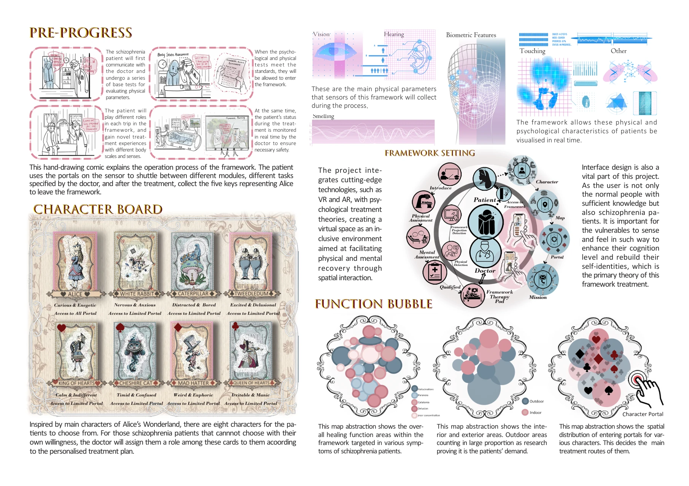
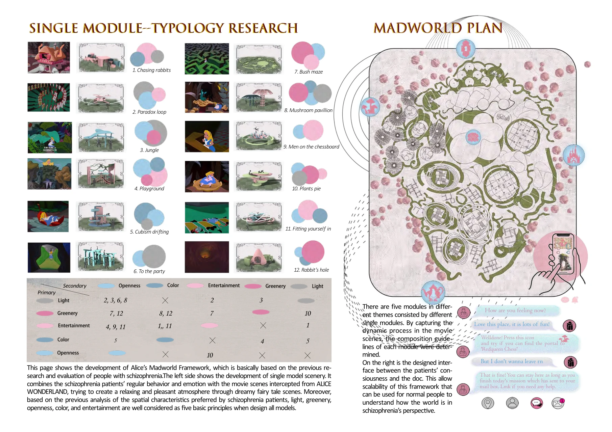
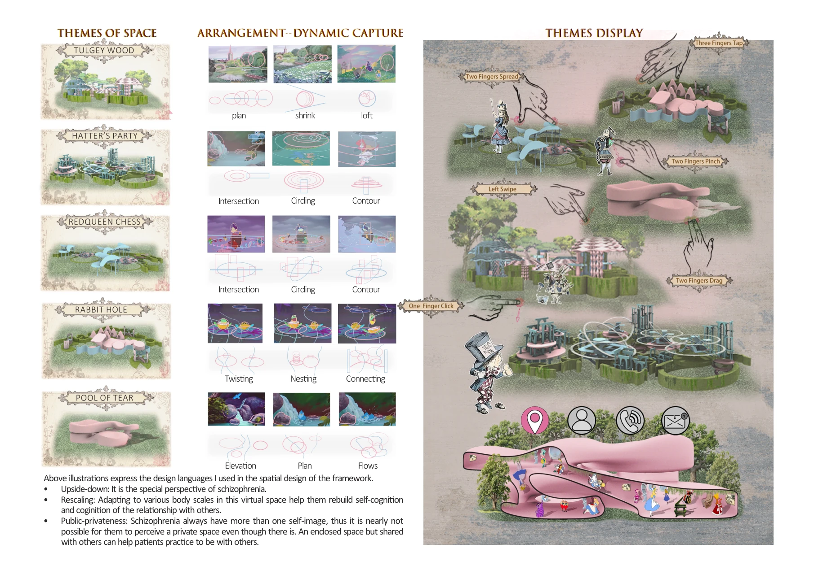

Previous research-informed design · VR / AR
Alice Madworld
Exploring perception, sensory experience and speculative therapeutic environments
Built on earlier research into spatial needs in therapeutic environments, Alice Madworld explores how virtual environments can offer different forms of perception, sensory interaction and spatial choice.
Research-led concept

The project builds on research into spatial conditions such as daylight, greenery, privacy, colour and openness. Its virtual environment explores how different people might navigate sensory experiences, interaction and retreat.
Published related book chapter · CRC Press / Taylor & Francis ↗
Selected research and design extracts


